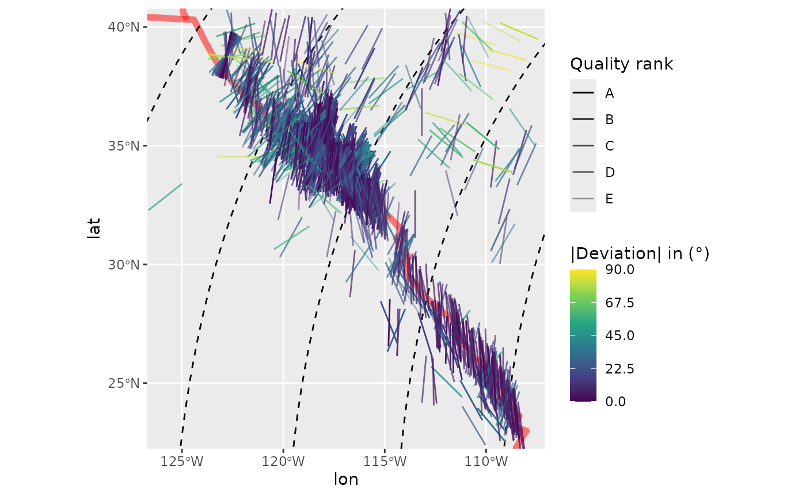
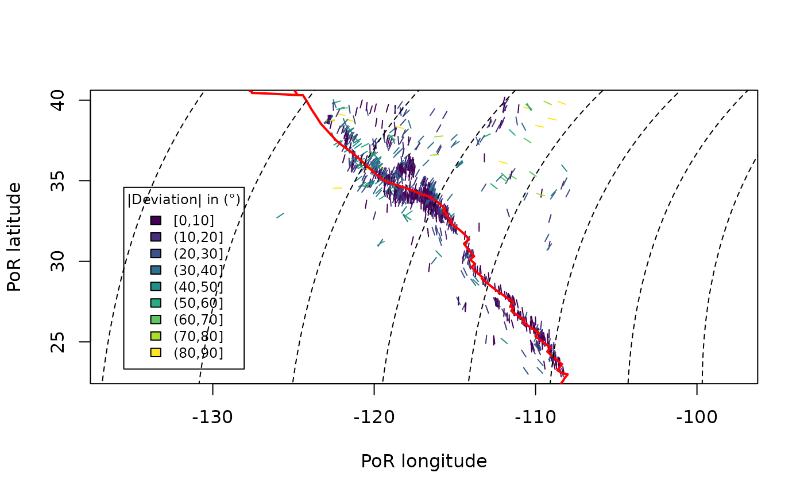

2. Handling large datasets
Tobias Stephan
2024-05-12
Source:vignettes/B_datasets.Rmd
B_datasets.RmdThis vignette teaches you how to handle large stress datasets and how to retrieve relative plate motions parameters from a set of plate motions.
Larger Data Sets
tectonicr also handles larger data sets. A subset of the World Stress Map data compilation (Heidbach et al. 2016) is included as an example data set and can be imported through:
data("san_andreas")
head(san_andreas)
#> Simple feature collection with 6 features and 9 fields
#> Geometry type: POINT
#> Dimension: XY
#> Bounding box: xmin: -119.966 ymin: 32.94 xmax: -115.627 ymax: 35.714
#> Geodetic CRS: WGS 84
#> # A tibble: 6 × 10
#> id lat lon azi unc type depth quality regime
#> <chr> <dbl> <dbl> <dbl> <dbl> <chr> <dbl> <fct> <chr>
#> 1 wsm07786 35.7 -120. 36 1 HF 1.3 A S
#> 2 wsm11750 32.9 -116. 7 1 FMF 7 A S
#> 3 wsm11759 33.0 -116. 169 1 FMF 5 A S
#> 4 wsm11782 33.2 -116. 1 1 FMF 8 A S
#> 5 wsm11801 33.9 -116. 23 1 FMF 6 A S
#> 6 wsm11830 33.5 -116. 160 1 FMF 9 A S
#> # ℹ 1 more variable: geometry <POINT [°]>Modeling the stress directions (wrt. to the geographic North pole) using the Pole of Oration (PoR) of the motion of North America relative to the Pacific Pate. We test the dataset against a right-laterally tangential displacement type.
data("nuvel1")
por <- subset(nuvel1, nuvel1$plate.rot == "na")
san_andreas.prd <- PoR_shmax(san_andreas, por, type = "right")Combine the model results with the coordinates of the observed data
san_andreas.res <- data.frame(
sf::st_drop_geometry(san_andreas),
san_andreas.prd
)Stress map
ggplot2::ggplot() can be used to visualize the results.
The orientation of the axis can be displayed with the function
geom_spoke(). The position argument
position = "center_spoke" aligns the marker symbol at the
center of the point. The deviation can be color coded.
deviation_norm() yields the normalized value of the
deviation, i.e. absolute values between 0 and 90\(^{\circ}\).
Also included are the plate boundary geometries after Bird (2003):
data("plates") # load plate boundary data setAlternatively, there is also the NUVEL1 plate boundary model by
DeMets et al. (1990) stored under
data("nuvel1_plates").
First we create the predicted trajectories of \(\sigma_{Hmax}\) (more details in Article 3.):
trajectories <- eulerpole_loxodromes(por, 40, cw = FALSE)Then we initialize the plot map…
map <- ggplot() +
geom_sf(
data = plates,
color = "red",
lwd = 2,
alpha = .5
) +
scale_color_continuous(
type = "viridis",
limits = c(0, 90),
name = "|Deviation| in (\u00B0)",
breaks = seq(0, 90, 22.5)
) +
scale_alpha_discrete(name = "Quality rank", range = c(1, 0.4))…and add the \(\sigma_{Hmax}\) trajectories and data points:
map +
geom_sf(
data = trajectories,
lty = 2
) +
geom_spoke(
data = san_andreas.res,
aes(
x = lon,
y = lat,
angle = deg2rad(90 - azi),
color = deviation_norm(dev),
alpha = quality
),
radius = 1,
position = "center_spoke",
na.rm = TRUE
) +
coord_sf(
xlim = range(san_andreas$lon),
ylim = range(san_andreas$lat)
)
The map shows generally low deviation of the observed \(\sigma_{Hmax}\) directions from the modeled stress direction using counter-clockwise 45\(^{\circ}\) loxodromes.
The normalized \(\chi^2\) test quantifies the fit between the modeled \(\sigma_{Hmax}\) direction the observed stress direction considering the reported uncertainties of the measurement.
norm_chisq(
obs = san_andreas.res$azi.PoR,
prd = 135,
unc = san_andreas.res$unc
)
#> [1] 0.03296388The value is \(\leq\) 0.15, indicating a significantly good fit of the model. Thus, the traction of the transform plate boundary explain the stress direction of the area.
Variation of the Direction of the Maximum Horizontal Stress wrt. to the Distance to the Plate Boundary
The direction of the maximum horizontal stress correlates with plate motion direction at the plate boundary zone. Towards the plate interior, plate boundary forces become weaker and other stress sources will probably dominate.
To visualize the variation of the \(\sigma_{Hmax}\) wrt. to the distance to the plate boundary, we need to transfer the direction of \(\sigma_{Hmax}\) from the geographic reference system (i.e. azimuth is the deviation of a direction from geographic North pole) to the Pole of Rotation (PoR) reference system (i.e. azimuth is the deviation from the PoR).
The PoR coordinate reference system is the oblique transformation of the geographical coordinate system with the PoR coordinates being the the translation factors.
The azimuth in the PoR reference system \(\alpha_{PoR}\) is the angular difference between the azimuth in geographic reference system \(\alpha_{geo}\) and the (initial) bearing of the great circle that passes through the data point and the PoR \(\theta\).
To calculate the distance to the plate boundary, both the plate boundary geometries and the data points (in geographical coordinates) will be transformed in to the PoR reference system. In the PoR system, the distance is the latitudinal or longitudinal difference between the data points and the inward/outward or tangential moving plate boundaries, respectively.
This is done with the function distance_from_pb(), which
returns the angular distances.
plate_boundary <- subset(plates, plates$pair == "na-pa")
san_andreas.res$distance <-
distance_from_pb(
x = san_andreas,
PoR = por,
pb = plate_boundary,
tangential = TRUE
)Finally, we visualize the \(\sigma_{Hmax}\) direction wrt. to the distance to the plate boundary:
azi_plot <- ggplot(san_andreas.res, aes(x = distance, y = azi.PoR)) +
coord_cartesian(ylim = c(0, 180)) +
labs(x = "Distance from plate boundary (\u00B0)", y = "Azimuth in PoR (\u00B0)") +
geom_hline(yintercept = c(0, 45, 90, 135, 180), lty = 3) +
geom_pointrange(
aes(
ymin = azi.PoR - unc, ymax = azi.PoR + unc,
color = san_andreas$regime, alpha = san_andreas$quality
),
size = .25
) +
scale_y_continuous(
breaks = seq(-180, 360, 45),
sec.axis = sec_axis(
~.,
name = NULL,
breaks = c(0, 45, 90, 135, 180),
labels = c("Outward", "Tan (L)", "Inward", "Tan (R)", "Outward")
)
) +
scale_alpha_discrete(name = "Quality rank", range = c(1, 0.1)) +
scale_color_manual(name = "Tectonic regime", values = stress_colors(), breaks = names(stress_colors()))
print(azi_plot)Adding a rolling statistics (e.g. weighted mean and 95% confidence interval) of the transformed azimuth:
san_andreas.res_roll <- san_andreas.res[order(san_andreas.res$distance), ]
san_andreas.res_roll$r_mean <- roll_circstats(
san_andreas.res_roll$azi.PoR,
w = 1 / san_andreas.res_roll$unc,
FUN = circular_mean, width = 51
)
san_andreas.res_roll$r_conf95 <- roll_confidence(
san_andreas.res_roll$azi.PoR,
w = 1 / san_andreas.res_roll$unc,
width = 51
)
azi_plot +
geom_step(
data = san_andreas.res_roll,
aes(distance, r_mean - r_conf95),
lty = 2
) +
geom_step(
data = san_andreas.res_roll,
aes(distance, r_mean + r_conf95),
lty = 2
) +
geom_step(
data = san_andreas.res_roll,
aes(distance, r_mean)
)
Close to the dextral plate boundary, the majority of the stress data have a strike-slip fault regime and are oriented around 135\(^{\circ}\) wrt. to the PoR. Thus, the date are parallel to the predicted stress sourced by a right-lateral displaced plate boundary. Away from the plate boundary, the data becomes more noisy.
This azimuth (PoR) vs. distance plot also allows to identify whether a less known plate boundary represents a inward, outward, or tangential displaced boundary.
The relationship between the azimuth and the distance can be better visualized by using the deviation (normalized by the data precision) from the the predicted stress direction, i.e. the normalized \(\chi^2\):
# Rolling norm chisq:
san_andreas.res_roll$roll_nchisq <- roll_normchisq(
san_andreas.res_roll$azi.PoR,
san_andreas.res_roll$prd,
san_andreas.res_roll$unc,
width = 51
)
# plotting:
ggplot(san_andreas.res, aes(x = distance, y = nchisq)) +
coord_cartesian(ylim = c(0, 1)) +
labs(x = "Distance from plate boundary (\u00B0)", y = expression(Norm ~ chi^2)) +
geom_hline(yintercept = c(0.15, .33, .7), lty = 3) +
geom_point(aes(color = san_andreas$regime)) +
scale_y_continuous(sec.axis = sec_axis(
~.,
name = NULL,
breaks = c(.15 / 2, .33, .7 + 0.15),
labels = c("Good fit", "Random", "Systematic\nmisfit")
)) +
scale_color_manual(name = "Tectonic regime", values = stress_colors(), breaks = names(stress_colors())) +
geom_step(
data = san_andreas.res_roll,
aes(distance, roll_nchisq)
)
We can see that the data in fact starts to scatter notably beyond a distance of 3.8\(^{\circ}\) and becomes random at 7\(^{\circ}\) away from the plate boundary. Thus, the North American-Pacific plate boundary zone at the San Andreas Fault is approx. 4–7\(^{\circ}\) (ca. 380–750 km) wide.
The normalized \(\chi^2\) vs. distance plot allows to specify the width of the plate boundary zone.
R base plots for quick analysis
The data deviation map can also be build using base R’s plotting engine:
# Setup the colors for the deviation
cols <- tectonicr.colors(
deviation_norm(san_andreas.res$dev),
categorical = FALSE
)
# Setup the legend
col.legend <- data.frame(col = cols, val = names(cols)) |>
dplyr::mutate(val2 = gsub("\\(", "", val), val2 = gsub("\\[", "", val2)) |>
unique() |>
dplyr::arrange(val2)
# Initialize the plot
plot(
san_andreas$lon, san_andreas$lat,
cex = 0,
xlab = "PoR longitude", ylab = "PoR latitude",
asp = 1
)
# Plot the axis and colors
axes(
san_andreas$lon, san_andreas$lat, san_andreas$azi,
col = cols, add = TRUE
)
# Plot the plate boundary
plot(sf::st_geometry(plates), col = "red", lwd = 2, add = TRUE)
# Plot the trajectories
plot(sf::st_geometry(trajectories), add = TRUE, lty = 2)
# Create the legend
graphics::legend(
"bottomleft",
title = "|Deviation| in (\u00B0)",
inset = .05, cex = .75,
legend = col.legend$val, fill = col.legend$col
)
A quick analysis the results can be obtained
stress_analysis() that returns a list. The transformed
coordinates and azimuths as well as the deviations can be viewed by:
results <- stress_analysis(san_andreas, por, "right", plate_boundary, plot = FALSE)
#> Reject Null Hypothesis
head(results$result)
#> azi.PoR prd dev nchisq cdist lat.PoR lon.PoR
#> 1 162.2848 135 27.284805 0.0919087122 0.210143277 56.93219 -82.67182
#> 2 137.7446 135 2.744584 0.0009299678 0.002292849 58.01202 -74.48278
#> 3 119.5840 135 -15.416011 0.0293399256 0.070663207 57.93239 -74.80319
#> 4 131.1908 135 -3.809243 0.0017913992 0.004413592 57.83707 -75.51138
#> 5 152.3277 135 17.327717 0.0370678728 0.088706703 58.17336 -76.62093
#> 6 109.7786 135 -25.221400 0.0785332091 0.181575875 57.84485 -76.16849
#> distance
#> 1 -0.15965337
#> 2 0.08688785
#> 3 0.14986772
#> 4 0.38296977
#> 5 -0.04424539
#> 6 0.33684309Statistical parameters describing the distribution of the transformed azimuths can be displayed by
results$stats
#> [,1]
#> mean 138.89370624
#> sd 37.12227404
#> var 0.18932742
#> dispersion 0.09840187
#> conf95 4.97276197
#> norm_chisq 0.03296388Statistical test results are shown by
results$test
#> $statistic
#> [1] 0.8031963
#>
#> $p.value
#> [1] 3.607527e-47… and the associated plots can be displayed by setting
plot = TRUE:
stress_analysis(san_andreas, por, "right", plate_boundary, plot = TRUE)References
Bird, Peter. 2003. “An Updated Digital Model of Plate Boundaries” Geochemistry, Geophysics, Geosystems 4 (3). doi: 10.1029/2001gc000252.
DeMets, C., R. G. Gordon, D. F. Argus, and S. Stein. 1990. “Current Plate Motions” Geophysical Journal International 101 (2): 425–78. doi: 10.1111/j.1365-246x.1990.tb06579.x.
Heidbach, Oliver, Mojtaba Rajabi, Karsten Reiter, Moritz Ziegler, and WSM Team. 2016. “World Stress Map Database Release 2016. V. 1.1.” GFZ Data Services. doi: 10.5880/WSM.2016.001.